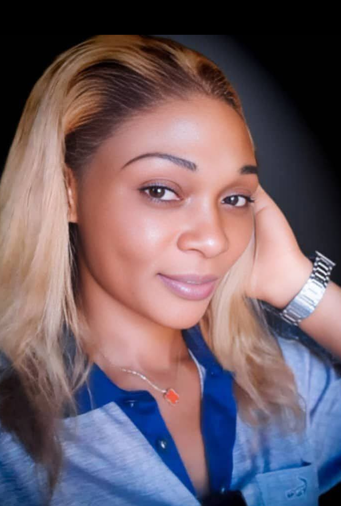

🎬 Portrait de Behoumie Rosario Slavia – L’Engagement au Service du Cinéma Camerounais
Nom complet : Behoumie Rosario Slavia
Date de naissance : 16 janvier 1992
Nationalité : Camerounaise
Première apparition : "Red Love" (2022), court métrage produit par Waj Prada
Avec une prestance calme et une détermination discrète, Behoumie Rosario Slavia s’impose comme l’une des actrices les plus authentiques de sa génération. Née à Yaoundé, elle poursuit une carrière artistique forgée par la passion et la rigueur.
🌟 Des débuts sincères et prometteurs
En 2022, Rosario débute dans le court métrage Red Love, dans le rôle d'une enseignante. Elle enchaîne ensuite :
- Mon passé, mon présent (2023) – grande sœur aimante
- Les filets du mariage (2025) – femme cocue
- Plusieurs séries web et figurations dans Pouvoir et Loi et Indomptable de Thomas Nguijol
🎭 Le rôle de Lucia dans "Héritiers"
Dans la série Héritiers produite par Planète Africa, elle incarne Lucia, une juge intègre, symbole de rigueur et d'équité.
🗣️ « Cette série représente une opportunité d'aller encore plus loin dans le cinéma. » – Rosario
🔍 Une actrice consciente de son impact
Pour elle, le cinéma est un outil de sensibilisation sociale :
🎤 « Le public devrait regarder cette série non pas pour le plaisir, mais pour les leçons de vie que nous procurent l’histoire racontée. »
💬 Son message
Elle encourage les jeunes artistes à se perfectionner et remercie ses fans :
💌 « Merci pour les mots d’encouragement, j’en ai vraiment besoin. »
📺 Lire aussi :
👉 Portrait de Rachel Eugénie Pondi
👉 Portrait de Tchida Anabelle Florile